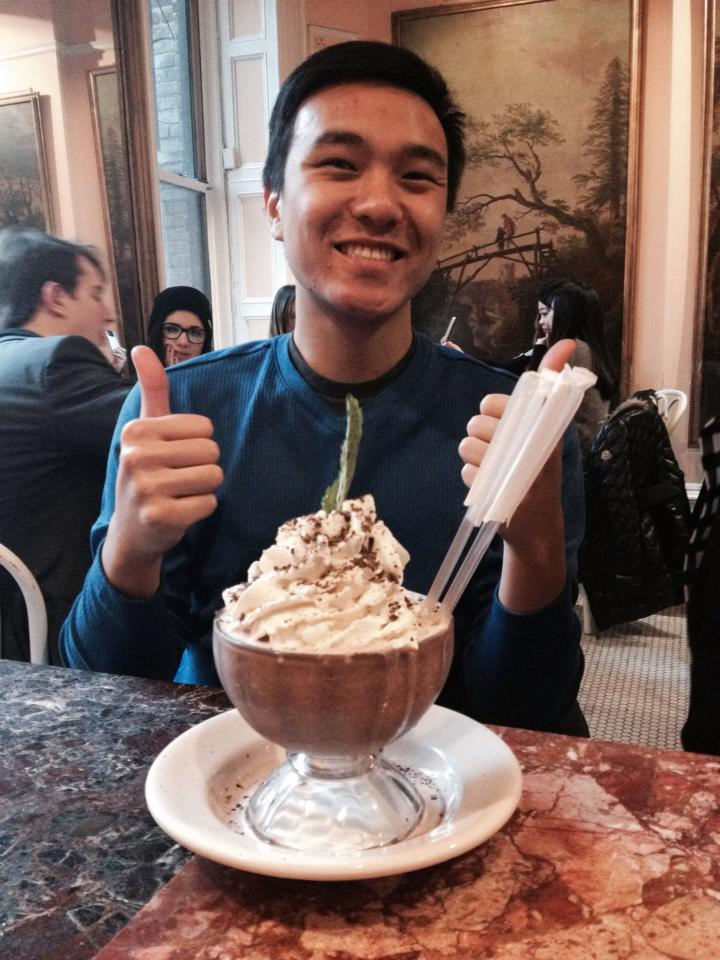

This was the last social event for Tennis at Cal this semester. I am really thankful for these events because I am given the opportunity to communicate with the members of the club on a deeper level outside of the tennis courts. I ordered a California Avocado Burger with Curly Fries and a Petite-Scoop Coffee Sundae, and went home feeling no regrets even with a swollen stomach. Also interesting to note, the collective receipt of everybody here turned out to be $314.15, the first five digits of pi! What are the odds of that? Anyways, this was a fantastic night and I hope to have more in the future with Tennis at Cal.
ABOUT ME

Hello! My name is Kenneth Lam and I am currently a 3rd year student at the University of California, Berkeley working towards a B.A. in Computer Science. I have created this personal website in order to continue sharpening my front-end web development skills, and I will be continously updating the site as I discover more and more methods of web development.
My computer science experience primarily consists of the courses and projects I have done here at Cal. Data Structures (CS61B) and Algorithms (CS170) are my two favorite computer science courses so far since I love the different ways of storing and manipulating data. I am currently studying Databases (CS186) and Software Engineering (CS169), which will require me to work on a project for a nonprofit organization with a team. I am also the Webmaster of Tennis at Cal (tennis club) this semester, and I created and maintain the entire website by myself: www.berkeleytac.com!
Outside of computer science, I love playing tennis. I enjoy being in Tennis at Cal, where players and friends casually practice, play games, and socialize together. Another sport I enjoy is snowboarding, however, originating from the warm city of San Diego makes this a difficult hobby to fulfill. My favorite show is Adventure Time because I love the creativity and general silliness of the cartoon. Also, I really enjoy eating food with good company and am always ready to eat out with anybody who sends an invitation. Thank you for taking the time to visit my website and I hope to see you soon!
RESUME

ADVENTURES
Fentons with Tennis at Cal
November 23rd, 2014
Dinner with the Old Physics Class
October 19th, 2014

Almost two years after taking Physics 7A, my discussion section still meets and gets dinner together on a bi-semesterly basis. Even our former GSI comes to these dinners and casually talks to us like we are old friends rather than students and teacher. We went to a popular all-macaroni restaurant in Oakland called Homeroom. Although I usually do not enjoy macaroni and cheese too much, this place was an incredible exception. I recommend to anybody who reads this adventure post! It was wonderful seeing how everybody is doing and our friendship never changing after all this time. Hopefully I will see them again soon!
Ice Skating with the Berkeley Family
January 9th, 2014

This picture was taken during my trip to New York last winter break. The weather there was literally the coldest I have ever endured, a whopping 4 Degrees Fahrenheit when I arrived off the plane. Keep in mind, I am a San Diegan and am weak to the cold. Anyways, the people in this picture are my closest friends and we treat each other as a family, thus the title Berkeley Family. This was one of the most memorable vacations I have ever had and I wish to go to another place foreign to me with my best friends soon.
CONTACT ME
Cellphone Number: (760) 884-7800
School E-Mail: lam.c.kenneth@berkeley.edu
General E-Mail: lam.c.kenneth@gmail.com
Questions?
Submit